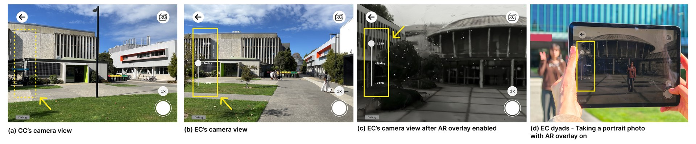
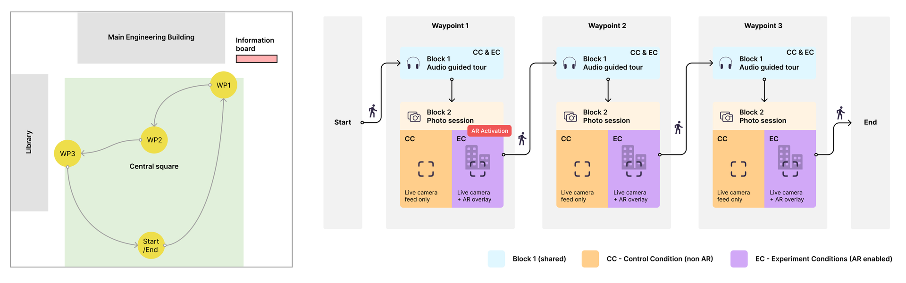
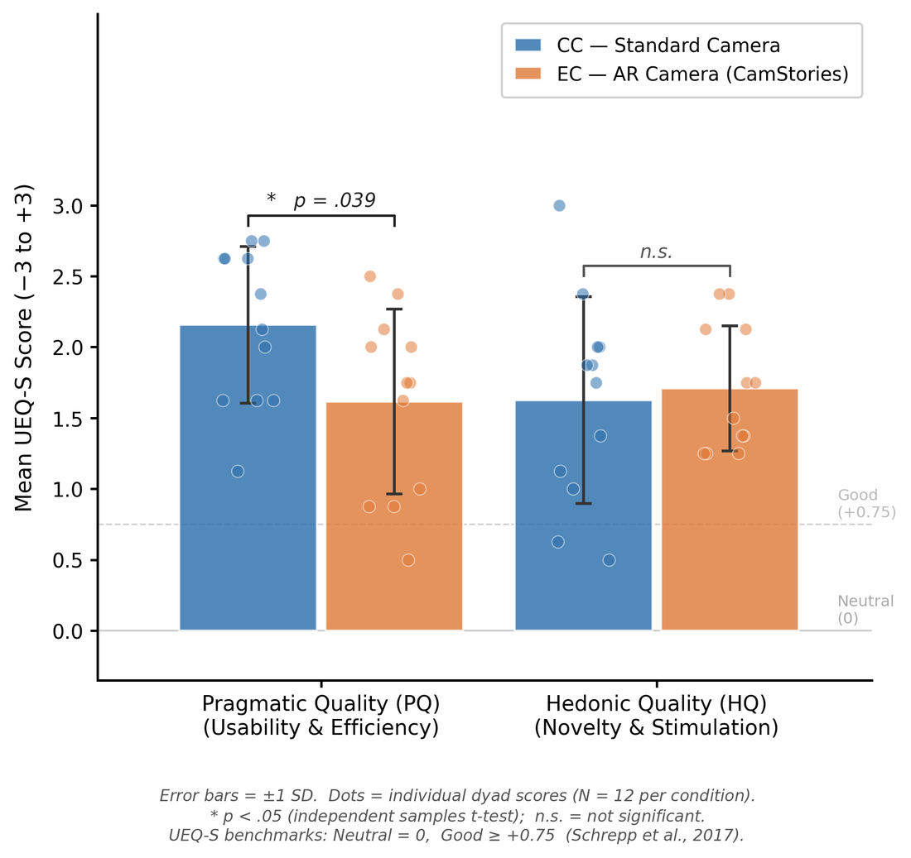
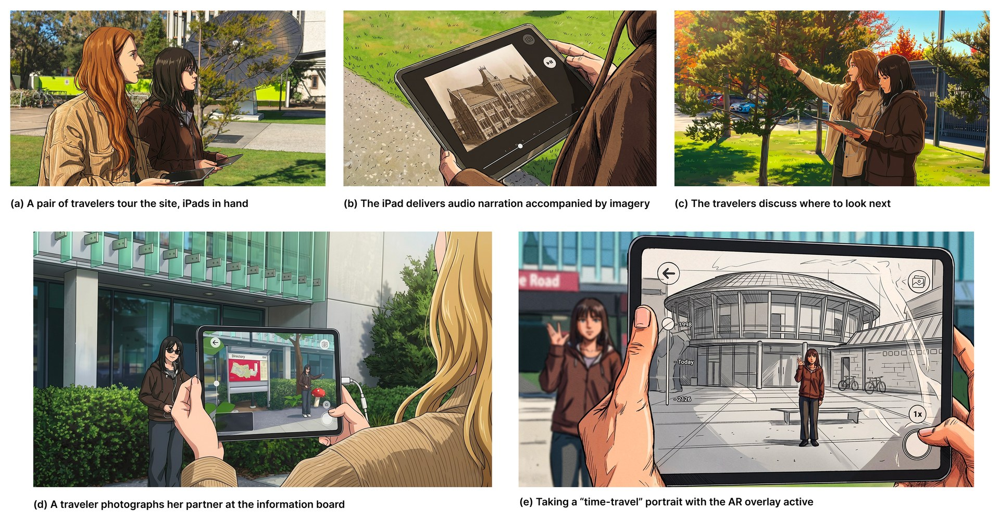

My first version of CamStories ended with an unwelcome finding: the photography was so engaging that people stopped listening to the story it was built to tell. This project is what I did about it — a redesigned system, a properly powered field study with 24 pairs of visitors, and an answer I was not expecting. The redesign fixed the problem I set out to fix. But the study also showed that the AR layer itself, the part I had assumed was doing the work, was not earning its keep.
What V1 Told Me to Change
The first prototype fused narration and photography into a single continuous activity, on the theory that a story woven into what people were already doing would be absorbed rather than endured. In practice the two competed for the same attention, and photography won. Participants remembered the volcano; they did not remember what the voice-over said about it.
Cognitive load theory explains why: narrative comprehension and creative interaction draw on the same limited working memory, so asking for both simultaneously means getting less of each. Multimedia learning research points at the remedy — segment the experience into short, self-paced steps. So for V2 I stopped trying to make the two activities happen at once. Rhythmic Operational Decoupling (ROD) gives each its own turn: at every waypoint, narration plays first with the interface deliberately quiet, and only when it finishes does the app open a dedicated photo session with no voice-over running.
V2 changed almost everything else too. V1 was a single phone with asymmetric roles — one person saw the AR, the other was directed into it. V2 gives both partners their own iPad showing the same content, which removes the information gap that had forced them to talk. That was a deliberate trade: I wanted to know whether AR could sustain social connection on its own, without asymmetry doing the work for it. Time travel moved from an implicit panning gesture to an explicit on-screen slider — 1998, Today, 2126 — because V1 participants had found the gesture arbitrary and unsignposted.

The Site and the System
The site is the Engineering Core at the University of Canterbury, a precinct with three time layers to work with: the present-day building, the footprint of a circular lecture theatre known to generations of students as the Mushroom — demolished after the 2010–2011 Christchurch earthquakes — and a speculative "living building" future. The past and future overlays were generated with World Labs' Marble, an AI 3D scene-synthesis tool, from archival photographs and concept imagery, then spatially anchored to the standing buildings.
Each pair carried two 11-inch iPad Pros running an identical build, audio through wired earphones, over a fixed three-waypoint route. AR was activated by scanning the campus map on an information board at the precinct entrance — a decision forced on me mid-project when the Niantic VPS platform I had planned around became unusable after a database migration. That compromise turned out to matter, and I return to it below.
The Study

I ran a one-factor between-subjects field study with 24 pairs (N=48), randomised at the pair level, 12 pairs per condition. The experimental condition used the full AR build. The control condition was identical in every respect — same audio narrative, same supporting images, same photo prompts, same iPads, same three photo sessions — except that the temporal slider and all overlays were removed, leaving a plain camera. The AR layer was the only variable.
That control is the point. It is easy to show that an AR experience is enjoyable; it is much harder to show that the AR is what made it enjoyable. Measures spanned perceived closeness before and after, social presence across four subscales, a six-item recall quiz separating spatially anchored content from audio-only facts, user experience across pragmatic and hedonic quality, and need-based technology acceptance. Analysis was at the pair level; a power analysis set the minimum at 23 pairs and I recruited 24. Two-thirds of participants had little or no prior AR experience, which is closer to a real visiting public than a technology-enthusiast sample.
What the Data Said
ROD worked. Recall was equivalent across conditions, and the AR group showed no deficit on audio-only facts — the overload V1 suffered from did not reappear. Spatially anchored content was remembered better than abstract facts overall, but that held equally in both groups.
AR carried a real usability cost. Pragmatic quality was significantly lower with AR than without it (2.16 vs 1.62 on a −3 to +3 scale, p = .039, d = 0.90 — a large effect). The interviews located it precisely: the slider appeared before the narration had explained it, the wide tablet made one-handed sliding awkward, and fast movement produced rendering artefacts that broke the illusion. Two of those three are fixable.

And nothing measurable offset that cost. Hedonic quality did not differ. Need fulfilment did not differ, and numerically favoured the non-AR group. Usage intention was effectively identical. Felt closeness rose slightly more with AR and perceived coordination rose slightly more without it, but neither trend reached significance.
The one thing both groups agreed on was the photography. Across all 24 pairs, the photo session — not the AR, not the narration — was named as the moment they felt most like a pair. Partners described the listening blocks as "everyone doing their own thing" and the photo blocks as "when we were truly together." That was true whether or not there was an AR overlay in the frame.
Two Mechanisms
The qualitative record explains the split, and I offer these as interpretations rather than proven effects.
The Screen Barrier: when each partner attends to their own AR viewport, moment-to-moment coordination degrades. This is the likely source of the non-AR group's edge on behavioural interdependence — and, revealingly, of the workarounds the non-AR pairs invented, counting "3-2-1 play" to sync their audio, which is exactly the kind of interdependent behaviour the instrument measures.
The Shared Spectacle: a striking thing witnessed together is remembered afterwards as closeness, even when each person saw it on a separate screen. Pairs called each other over to look, reacted jointly, and later described those moments as the high points of the tour. Notably, the immersion itself was reported in the first person singular — "I felt like I was there," not "we" — while the closeness was reported in the plural.

One field finding sharpens all of this. Two of the twelve AR pairs never activated the overlay at all: they read the information board as ordinary signage and walked past the trigger. They carried the full complexity of the AR interface for an entire tour without ever seeing its content — cost with no payoff, and it shows in their scores. I report this as a finding rather than a footnote, because it is the clearest possible evidence that an activation step is a first-class interaction moment, not a line in a briefing.
What I Take From It
The honest headline is that AR did not enhance this experience; it redistributed it. It moved the visit toward something more phenomenological — a felt sense of standing in 1998 — and charged a measurable usability cost for it. Whether that trade is worth making is a design decision, not a technical one, and it depends entirely on what the experience is for. If the goal is temporal immersion, commit to AR and budget for the friction. If the goal is factual recall, a well-written audio tour with good archival imagery already does the job. If the goal is getting two people to coordinate, add shared controls rather than expecting the AR to generate interaction on its own.
The finding I keep returning to is the simplest one. What brought these pairs together was not the technology they were both looking at — it was having something to do together. For collaborative AR, that suggests designing the AR as a shared task rather than as content each person consumes in parallel. Sharing a moment brings people together; synchronised screens do not.